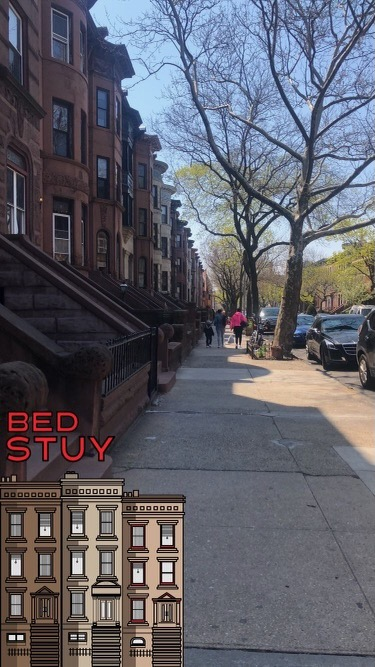

Rent-Stabilized Apartment Hike Goes Into Effect This Week

Rent hikes for rent-stabilized apartments are set to go into effect this week for leases beginning on or after October 1, 2022 and on or before September 30 of next year. Photo Credit: Asar John
By Asar John
October 7, 2022
This year's decision made by the Rental Guidelines Board is a historic one-- it's the highest hike reccomendation in almost a decade, and the highest since the onset of the pandemic. Tenants, landlords adovocacy groups for both groups and the mayor have all spoken about this year's hike.
Rent stabilized status usually applies to apartments in buildings with six or more units built prior to 1974.
The now in effect reccomendations came in pairs-- one for a 3.25 percent increase on one-year leases
and another for a 5 percent increase for two-year leases.
The Rental Guidelines Board is a panel of nine people appointed by the mayor, and are term-limited. Two are representative of tenants and their concerns, and two other members are appointed to represent owner interests. Like the tenant members, one serves a two-year term, and the other a three-year term. Five members (including the chair) are tapped to represent the general public.
Mayor Adams plays both sides of the fence, expressing his sympathy for tenants facing the burden of an increase, and small landlords who may be struggling to stay afloat.
The mayor said that small landlords are risking “bankruptcy” because of years experienced with no rent hikes.
However, according to Justfix.nyc, a housing advocacy research group that analyzed building ownership in New York City, from the Dept. of Housing Preservation and Development, “larger landlords were a lot more likely to own rent-regulated buildings.” Very large landlords were those considered landlords with more than 60 buildings
Among those “larger” landlords, rent-regulated properties represented more than half of the homes that they owned altogether.
"Mayor", Eucalyp, from Noun Project
"Nine People", Alfredo @ IconsAlfredo.us, from Noun Project
"landlord", Simon Georg Fiedler DE, from Noun Project